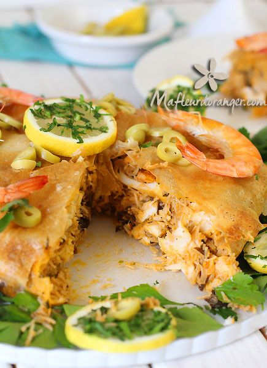

Faire revenir à feu doux l'oignon et l'ail dans le mélange beurre/huile, assaisonner avec le sel, le poivre, le cumin et le thym. Mouiller avec le bouillon de crevettes, ajouter la sauce soja et la crème fraîche. A ébullition ajouter les champignons noirs émincés et le vermicelle. Laisser mijoter à feu doux en remuant jusqu'à absorption de la sauce. Retirer du feu et rajouter les crevettes..
Dans une autre poêle, faire fondre le beurre avec l'huile. Y faire revenir pendant une minute les filets de poisson. Saler et poivrer. Les retirer et les réserver. Faire sauter dans la même poêle les champignons de Paris émincés. Saler et poivrer.
Dans une autre poêle, faire fondre le beurre avec l'huile. Y faire revenir pendant une minute les filets de poisson. Saler et poivrer. Les retirer et les réserver. Faire sauter dans la même poêle les champignons de Paris émincés. Saler et poivrer.
Dans une autre poêle, faire fondre le beurre avec l'huile. Y faire revenir pendant une minute les filets de poisson. Saler et poivrer. Les retirer et les réserver. Faire sauter dans la même poêle les champignons de Paris émincés. Saler et poivrer..
Cuire la pastilla au four préchauffé à 180°C pendant 25 à 30 mn.
Pour le bouillon de crevettes : placer dans une marmite 250g de parures et têtes de crevettes fraîches, 1/2 citron, 1 feuille de laurier, 2 gousses d'ail et mouiller avec 2,5l d'eau. Placer sur le feu et laisser cuire jusqu'à évaporation de 1/3 du liquide. Retirer du feu et laisser refroidir. Filtrer le bouillon et l'utiliser selon la recette.
